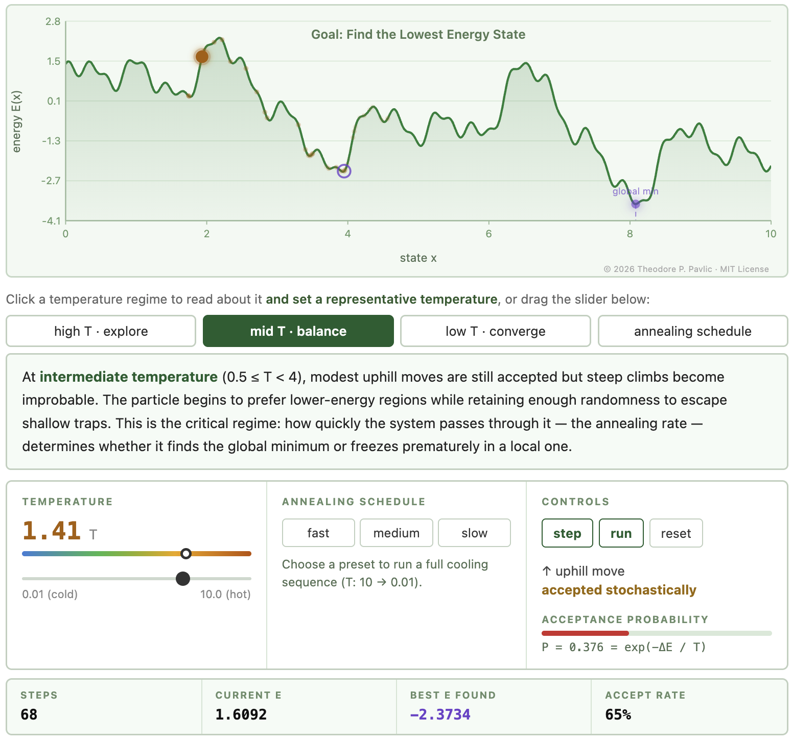
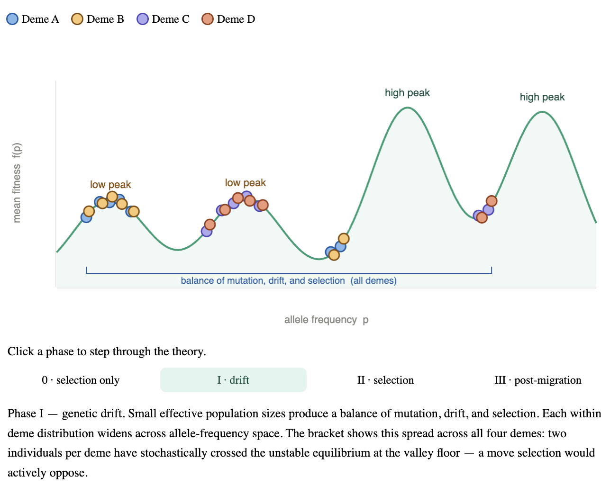

Supplemental demonstrations for Theodore Pavlic's IEE/CSE 598: Bio-Inspired AI and Optimization at Arizona State University.

Step through the annealing process: temperature schedules, neighbor selection, and probabilistic acceptance criteria on an energy landscape.

Walk through Sewall Wright's three-phase Shifting Balance Theory: how genetic drift, selection, and interdemic migration help a metapopulation escape local fitness peaks.